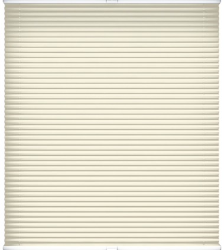
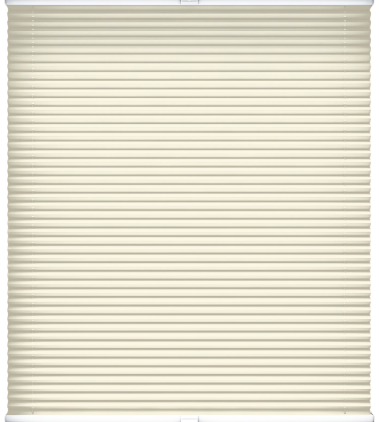

Рулонные
Предназначены для установки на рамы вертикальных или поворотно - откидных окон. Это свободновисящая модель с нижней магнитной фиксацией или с боковой фиксацией на леску. Подъем и опускание осуществляется пр помощи цепи.
Шторы разработаны специально для установки на створку окна. Верхний короб и направляющие визуально объединяют изделия с окном. Защищают края ткани от износа продлевая срок службы.